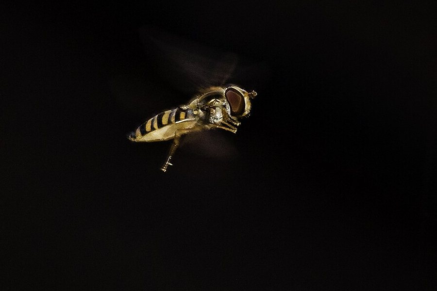

Cómo nadan los peces y vuelan los pájaros
Una bacteria y un atún nadan en el mismo líquido, y sin embargo viven en mundos físicos distintos. Para el atún, el agua es algo que se empuja y que sigue moviéndose después. Para la bacteria, es una especie de miel en la que todo se detiene al instante. Entender cómo se mueven los seres vivos empieza por saber en cuál de esos mundos está cada uno.
El número de Reynolds compara la inercia con la viscosidad. Edward Purcell, en su famosa charla sobre la vida a bajo número de Reynolds, daba valores orientativos: una persona que nada ronda 10⁴, y un microorganismo, entre 10⁻⁴ y 10⁻⁵ [1]. Son ocho o nueve órdenes de magnitud de diferencia [1].
A número de Reynolds alto, la inercia manda: nadar consiste en empujar fluido hacia atrás. A número de Reynolds bajo, no hay nada que se parezca a una brazada con impulso: eso se cuenta en Flagelos y Cilios.
A número de Reynolds alto, los animales nadan o vuelan oscilando una cola o unas alas. G. K. Taylor, R. L. Nudds y A. L. R. Thomas mostraron en 2003 algo llamativo [2]. John Dabiri lo resume así: si se combinan la frecuencia f del movimiento, su amplitud A y la velocidad de crucero U en un número sin unidades [3]:
ese número cae en una franja relativamente angosta, centrada entre 0,2 y 0,4 [3]. Según Taylor y sus colegas, ahí el rendimiento propulsivo es alto, y animales tan distintos como delfines, tiburones, peces óseos, aves, murciélagos e insectos convergen en ese mismo rango cuando van de crucero [2]. Dabiri advierte que esa franja coincide con la de mayor crecimiento de perturbaciones en un chorro, y que por eso se ha especulado que refleja una optimización de la formación de vórtices en la estela [3]: una idea, no un hecho establecido.
Un ejemplo: un pez que recorre 1 m/s con una cola que oscila con 20 centímetros de amplitud y St = 0,3 bate unas 1,5 veces por segundo (un cálculo propio con valores de ejemplo).

Empujar sin pasarse: si la cola bate muy lento, casi no empuja. Si bate muy rápido, gasta energía revolviendo agua de costado. Hay un punto medio, y parece que la evolución lo encontró muchas veces por separado.
Los animales inspiran diseños, pero las historias se simplifican rápido. Lo muestra el pez caja, que resultó no tener bajo arrastre, y también la piel del tiburón, cuyo efecto real es más sutil de lo que se cuenta. Dabiri señala otra cosa importante: los animales que nadan y vuelan pueden moverse con mucha más eficiencia que los sistemas que construimos, y todavía estamos estudiando cómo lo logran [3].
Una historia con sorpresas: el basilisco corre sobre el agua, la savia sube sin bomba y un camarón dispara burbujas. La biología está llena de soluciones que la mecánica de fluidos explica después de que las vemos (un comentario propio).
Moverse en un fluido no es lo mismo en todas las escalas. El número de Reynolds separa el mundo de la inercia del mundo de la viscosidad, y en el primero, el número de Strouhal muestra que animales muy distintos cruzan en el mismo rango. Por qué exactamente sigue siendo una pregunta abierta.
Pregunta para la comunidad: Medí un caso vos: en un video de un delfín o un pájaro en crucero, estimá la frecuencia, la amplitud y la velocidad. ¿Da entre 0,2 y 0,4?